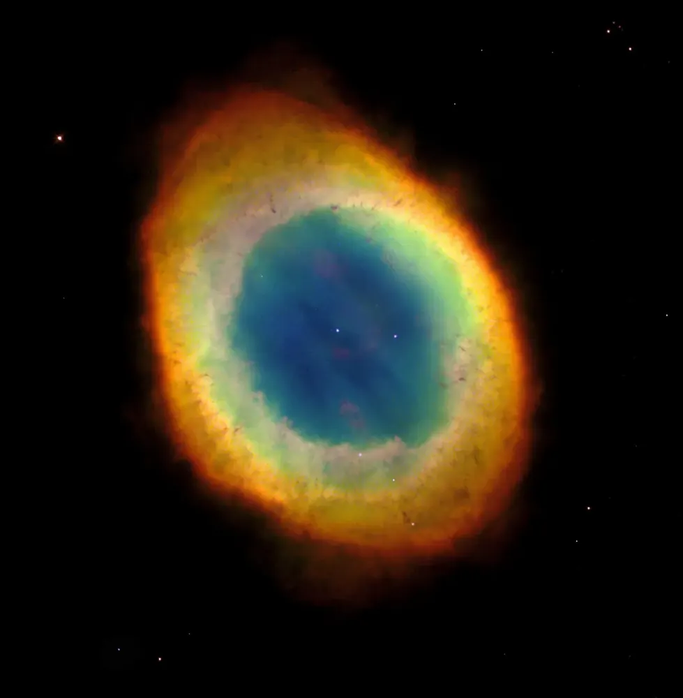
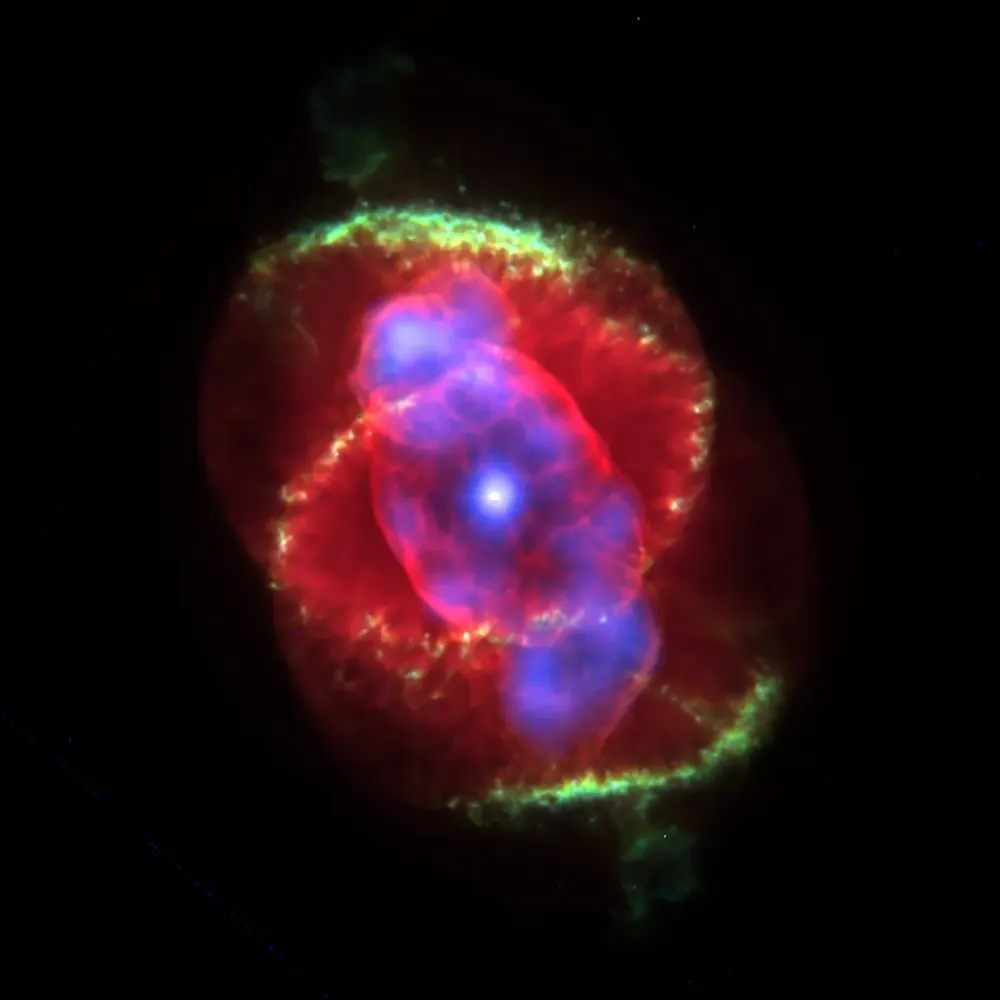
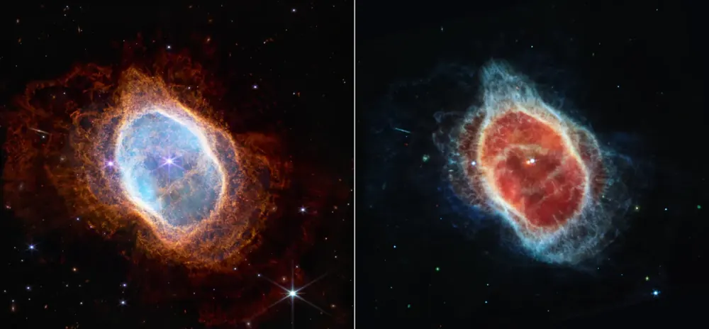
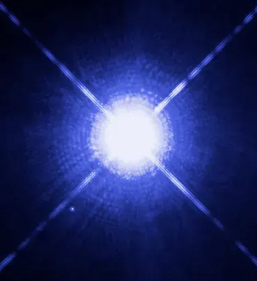

← StarsतारेEstrellasEstrelasÉtoilesالنجوم
White dwarfs and planetary nebulaeWhite dwarf और planetary nebulaEnanas blancas y nebulosas planetariasAnãs brancas e nebulosas planetáriasNaines blanches et nébuleuses planétairesالأقزام البيضاء والسدم الكوكبية
The quiet, beautiful end of stars like the Sun.सूर्य जैसे तारों का शांत, सुंदर अंत।El final tranquilo y hermoso de estrellas como el Sol.O fim tranquilo e bonito de estrelas como o Sol.La fin calme et belle des étoiles comme le Soleil.النهاية الهادئة والجميلة لنجوم مثل الشمس.

📷 The Hubble Heritage Team (AURA/STScI/NASA) · Public domain

📷 J.P. Harrington and K.J. Borkowski (University of Maryland), and NASA · Public domain

📷 NASA, ESA, CSA and STScI · Public domain

📷 NASA, ESA, H. Bond (STScI) and M. Barstow (University of Leicester) · Public domain
A planetary nebulaPlanetary nebulaUna nebulosa planetariaUma nebulosa planetáriaUne nébuleuse planétaireسديم كوكبي
When a Sun-like red giant has used up its fuel, it puffs its outer layers into space. The hot core lights the gas from inside, making a glowing shell of many colours. Early astronomers with small telescopes thought these round shapes looked like planets, so they are called planetary nebulae, though they have nothing to do with planets.जब सूर्य जैसा red giant अपना ईंधन ख़त्म कर लेता है, तो अपनी बाहरी परतें अंतरिक्ष में फूँक देता है। गर्म केंद्र उस गैस को अंदर से रोशन करता है, जिससे कई रंगों का चमकता खोल बनता है। छोटे telescopes वाले पुराने खगोलविदों को ये गोल आकार ग्रहों जैसे लगे, इसलिए इन्हें planetary nebula कहते हैं, हालाँकि इनका ग्रहों से कोई लेना-देना नहीं।
A planetary nebula fades in only about 10,000 to 20,000 years, a blink in a star’s life. Its gas, now carrying carbon and nitrogen made by the star, mixes into clouds that will make new stars and planets.Planetary nebula सिर्फ़ लगभग 10,000 से 20,000 साल में धुँधली पड़ जाती है, तारे के जीवन में पलक झपकने जितना। इसकी गैस, जिसमें अब तारे का बनाया carbon और nitrogen है, उन बादलों में मिल जाती है जो नए तारे और ग्रह बनाएँगे।
A white dwarfWhite dwarfUna enana blancaUma anã brancaUne naine blancheقزم أبيض
The core left behind is mostly carbon and oxygen, squeezed so hard that electrons refuse to be packed any closer. That push, not fusion, holds it up. It starts hotter than 100,000 °C and simply cools down, slowly, over trillions of years.पीछे बचा केंद्र ज़्यादातर carbon और oxygen है, इतना दबा हुआ कि electrons और पास आने से इनकार कर देते हैं। यही दबाव, fusion नहीं, इसे सँभाले रखता है। यह 1,00,000 °C से भी ज़्यादा गर्म शुरू होता है और बस धीरे-धीरे, खरबों साल में, ठंडा होता जाता है।
The nearest white dwarf is Sirius B, the faint partner of the brightest star in the sky. It has about the mass of the Sun packed into a ball a bit smaller than Earth.सबसे पास का white dwarf Sirius B है, आसमान के सबसे चमकीले तारे का धुँधला साथी। इसमें लगभग सूर्य जितना द्रव्यमान पृथ्वी से थोड़े छोटे गोले में भरा है।